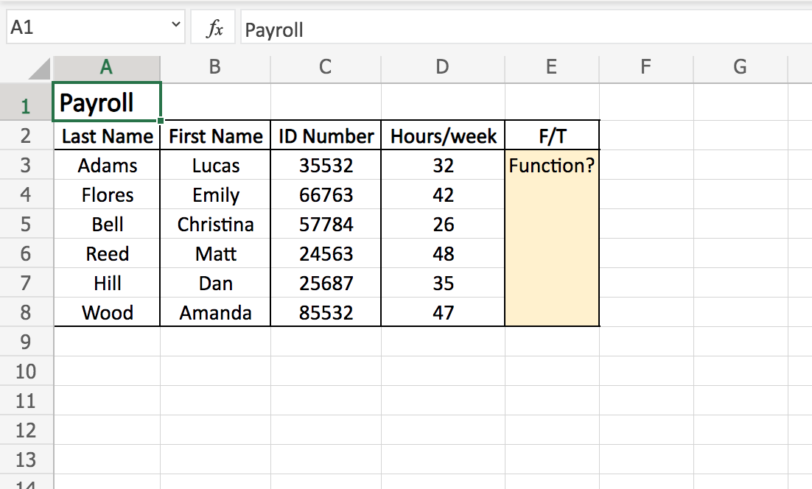
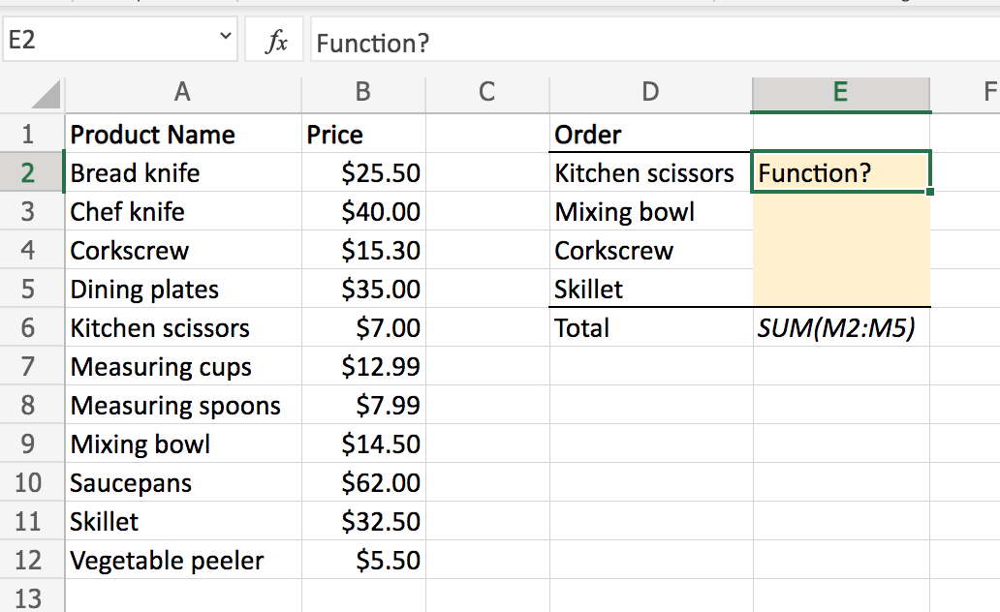

See code repo of this website!
Introduction to Data Analysis Using Microsoft Excel
Graded Assignment
Question 1: You are working in Excel through free Microsoft Office Online and have just finished inputting the sales data from your company. You wish to save the changes made on your spreadsheet. What steps should you follow?
- Click on the floppy disk icon located in the ribbon.
- Select "File" followed by "Save" in the toolbar.
- Select "Edit" followed by "Save" in the toolbar.
- None. All changes are automatically saved while working on Microsoft Excel.
Question 2: Sophie is working on sales data from her company and wishes to only see sales from March while hiding the sales from all other months of the year. What steps should she take?
- Convert her data into a table and sort the table by month. Then, delete the sales data from all other months of the year.
- Highlight the data from March and copy it into a new worksheet to create a new table with the March sales data.
- Convert her data into a table and filter the month column to only show the sales from March.
Question 3: Sophie is working on payroll and has data on the weekly hours for each employee. She wishes to create a new column in her table to classify each employee as F for “Full time” if they worked 40 or more hours, or P for “Part-time” if they worked less than 40 hours.
What function would she write for the first cell (E3) of the column?

- =IF(D3<40,"F","P")
- =IF(D3>40,P,F)
- =IF(D3>=40,"F","P")
- =IF(D3=40,"F","P")
Question 4: Sophie is working on an order and wishes to calculate the total price for the order. She first needs to look up the prices for each item in the order, given the product name and price data.
What function would she write in cell E2 to obtain this information without doing it manually?

- =VLOOKUP(A2,$A$2:$B$12,3,FALSE)
- =VLOOKUP(D3,$A$2:$B$12,3,FALSE)
- =VLOOKUP(E2,$A$1:$C$20,2,FALSE)
- =VLOOKUP(D2,$A$2:$B$12,2,FALSE)
Question 5: Sophie is working on sales data from her company and wishes to see what the total profits were for each Region, on each month. What PivotTable would she draw?
- The PivotTable would have: Months as Values, Profits as Columns, and Profits as Rows.
- The PivotTable would have: Profits as Values, Region as Columns, and Months as Rows.
- The PivotTable would have: Region as Values, Months as Columns, and Profits as Rows.
- The PivotTable would have: Region as Values, Profits as Columns, and Months as Rows.